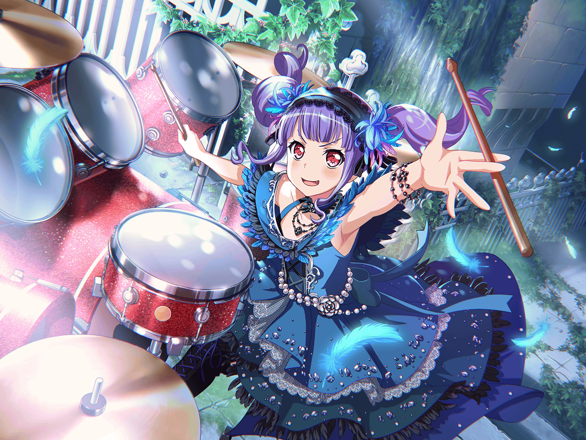

あこ
あっ、{{userName}}さんだー！
お疲れさまです！
あこ
今はねー、休憩中なんだ！
あこ
え？ 練習中、すごく集中していたねって？
あこ
うんっ！
この前のライブが終わってから、調子がいいんだ～
あこ
それにね、ドラムを叩くのがすっごく楽しいの！
あこ
今までも、もちろん楽しかったんだけどね。
叩いているとこう……いつも以上にワクワクするんだ！
あこ
スティック握ると気合入ってね、
今日はどんな音が出せるんだろう、って！
あこ
あの曲を演ってからかなぁ。
ドラムのことが、もっとも～っと好きになったのは
あこ
うんっ！ この前のライブでラストに演った曲だよ！
友希那さんのお父さんの曲なんだって
あこ
初めて曲を聴いた時、かっこいい曲だなって思って、
わ～って！ 気持ちが引っ張られたの
あこ
イメージも、こう、わ～って浮かんでね！
きっとこういう感じだーって！ なったの！
あこ
そのままね、その気持ちのままドラムを叩いたら、
すっごく楽しくて……
あこ
ぜ～ったい、ライブで演りたいって思ったんだ！
あこ
あっ！ そのときね、
りんりんも一緒にキーボードを弾いてくれたんだ～！
あこ
こんな感じかな～って弾いてくれたから、
あこもそれに合わせて、ドラム叩いて……
あこ
もうホント、
すっごく気持ちよかったんだよ～！
あこ
だからね、その後、
てっきりライブであの曲を演れるって思って、
ウキウキしてんだけど……
あこ
友希那さんは演るかどうか迷ってたみたいなんだ
あこ
レベルに見合わない、って……
あこ
確かに、ライブまであんまり時間もなかったし、
曲もむずかしそうだったから……
あこ
こういうの、なんて言うんだっけ……？ えっと、そう！
リスキー、かなって
あこ
ライブだもん。
ちゃんとした演奏しなくちゃ、お客さんも楽しめないもんね！
あこ
だから、友希那さんも
新曲やるの迷ってるのかと思ったんだけど……
あこ
そうじゃなかったんだ。
もっとこう、気持ちの問題っていうか……
あこ
歌うことに大きな覚悟が必要なんじゃないかって
りんりんが教えてくれた
あこ
あこね、それがどういう意味なのか全然わからなかったんだ。
友希那さんがどうしたら覚悟を決められるのかも
わからないし……
あこ
あこは、考えるよりも先に動いちゃうタイプだから。
いろいろ考えている友希那さんとは逆なんだと思う
あこ
だから、曲に対してそんな風に一生懸命考えたり、
悩んだりしている友希那さんって、
すっごくカッコイイって思った
あこ
うまくいえないんだけど……ただ歌を歌うだけなら
誰だってできるけど、友希那さんはそうじゃないんだよ
あこ
曲に対する友希那さん自身の気持ちだったりとか、
向き合い方とか……そういうことに対してちゃんと
決着をつけていくんだ
あこ
そういうの、カッコイイ！ って思う！
あこ
あこも、そんな友希那さんの力になれたらって思って、
一生懸命曲の練習をしたんだ
あこ
あの曲……本当にカッコよくて、演奏したいって
思ってたから。友希那さんからあの曲をやりたいって
言ってもらえた時、うれしかったなあ〜
あこ
練習中の友希那さんが、ホントすごかったの！
あこ
練習中、ず～っと集中して歌い続けてるのに、
あこたちの音もしっかり聞いてて……
あこ
あこ、友希那さんに負けないようにしなきゃって、
しっかり友希那さんを支えなくちゃって
あこ
みんなで、最高の曲を作らなくちゃって！
必死に必死に頑張ったんだ～！
あこ
そうしたら、ライブも大成功だったし……
も～、すっごーく！ 楽しかったんだよ～！
あこ
あの曲をみんなで演奏出来てホントによかった！
あこ
……はっ！
こういうときは……えー、コホン
あこ
大いなる試練を突破した我は、
更なる漆黒の力を得て……えっと……
あこ
こう……わーっていっぱい力を解放して、
それで……我より上位なる存在に…………
あこ
と、とにかく、これからも
友希那さんに頼ってもらえるように、がんばるぞー！
おー！！